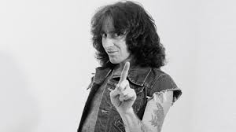
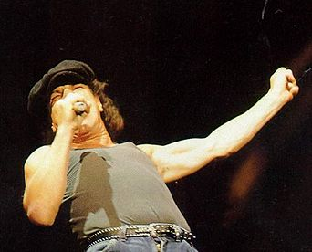
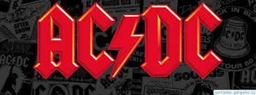

AC/DC es un grupo de rock australiano formado en 1973 en Sídney, Australia, por los hermanos escoceses Malcolm y Angus Young.
Sus álbumes se han vendido en un total estimado de 200 millones de copias, embarcándose en giras multitudinarias por todo el mundo, y sus éxitos han musicalizado varias producciones cinematográficas sobresalientes. Son famosas sus actuaciones en vivo, resultando vibrantes y exultantes espectáculos de primer orden. Mucho de ello se debe al extravagante estilo de su guitarrista principal y símbolo visual, Angus Young, quien asume el rol de agitador musical durante los conciertos, gracias a sus dinámicos y adrenalínicos despliegues escénicos uniformado de colegial callejero. Al comienzo, los circuitos de pubs australianos fueron testigo de los primeros meses de vida del proyecto, tiempos por los cuales sufrieron diversos cambios en su alineación. En 1974, la llegada del cantante Bon Scott, se convertiría en pieza clave del éxito del grupo. Su presencia en escena, junto a los hermanos Young, lo convirtió en uno de los personajes más carismáticos de la historia del rock. La formación se estabilizaría con Mark Evans (bajo) y Phil Rudd (batería).
Primeros añosEn noviembre de 1973, Malcolm Young y Angus Young AC/DC , reclutando al bajista Larry Van Kriedt, al cantante Dave Evans y al baterista Colin Burgess.66 Esta formación adoptó una imagen decididamente ambigua, en sintonía con la moda del glam-rock de la época. Los primeros ensayos se basaban en clásicos de blues y rhythm and blues.
Llegada de Bon ScottMuy pronto Angus y Malcolm se deshicieron del resto del grupo e iniciaron la búsqueda de miembros para una nueva formación. En septiembre de 1974, Bon Scott reemplazó a Dave Evans. Hasta entonces, el grupo solo había grabado un sencillo.
Tras la muerte de Bon Scott la banda se plantea su continuidad, pero finalmente reclutan a Brian Johnson. El inglés provenía de la popular banda británica Geordie, y se dice que era el vocalista preferido de Scott. Johnson se encontraba sin grupo y meditaba si continuar en el mundo musical. Sin embargo, aceptó el reto y entró con el resto del grupo a grabar lo que sería uno de los grandes discos de los años 80: Back in Black, dedicado a Bon Scott, y bajo la producción de Robert Lange.
En 1976 incursionaron por primera vez fuera de las fronteras australianas con High Voltage y Dirty Deeds Done Dirt Cheap, discos minimalistas de básico rock, que ofrecían un contrapunto sonoro a las ampulosidades y la fastuosidad de las bandas que triunfaron en el mercado de la época. Ese mismo año se trasladaron al Reino Unido, de donde procedían los Young. Desembarcaron en pleno auge del punk rock, lo que contribuyó a que en poco tiempo obtuvieron una enorme aceptación del público, ocupando inmediatamente los primeros puestos en ventas con discos como Let There Be Rock (1977) y Powerage (1978). Durante su estadía en tierras inglesas, decidieron introducir a Cliff Williams como nuevo bajista.
carrera triunfal del grupo, sustentada por la rudeza carismática de Scott, y la potencia rítmica del dominio guitarrero de los hermanos escoceses, proseguirá con el multimillonario e histórico Highway to Hell (1979), uno de los discos más emblemáticos de la historia del rock, y del que se vendieron millones de copias, que los catapultó hacia la fama en los Estados Unidos, y solidificó el estatus de superestrella internacional de la banda. La canción principal, «Highway to Hell», se acabaría convirtiendo en todo un himno del rock de finales de los '70.
Malcolm Young y Angus Young idearon el nombre para la banda después de ver escrito «AC/DC» en la parte de abajo de la máquina de coser de su hermana Margaret (AC/DC es la abreviación en inglés de corriente alterna/corriente continua, que indica que un dispositivo eléctrico puede conectarse a la red eléctrica alterna e internamente la convierte en corriente directa o continua). Los hermanos sintieron que este nombre simbolizaba el sonido enérgico y crudo de la banda, así como el poder de sus actuaciones. No obstante, en alguna culturas, es un término de jerga para la bisexualidad. La banda ha dicho que ellos no eran conscientes de ese uso hasta que un taxista les llamara la atención una noche después de un concierto, por lo que durante años trataron de demostrar la heterosexualidad del grupo, sobre todo en las primeras canciones.
